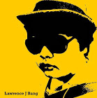

A talented graduate developer with a strong academic background and some commercial experience. A confident communicator, strategic thinker, and innovative creator to develop software that is customized to meet a company’s organizational needs, highlight their core competencies, and further their success.
Contact me
Maecenas facilisis facilisis consequat. Curabitur fringilla pellentesque neque, imperdiet efficitur urna gravida vel. Cras augue diam, sollicitudin sit amet felis ut, eleifend faucibus dui. Proin euismod suscipit lacus, et scelerisque nisi aliquam a. Nunc feugiat mattis quam, ut luctus enim ultrices at.
I love it. If only I had done it earlier. I am highly-motivated, result oriented, self-driven, hard-working, fast learner and smart eager to be a part of the team, learn new technologies, become a valuable employee of the company and bring it success. Well-organized with an ability to prioritize tasks and capability to work, develop and grow in the company. Experienced in communicating with the team and clients. Attentive and accurate to details.